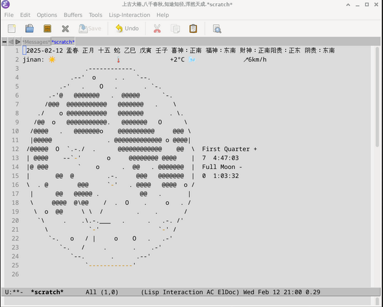

我的init.el和各种启动配置

1. 我的全部配置自文件
2. 配置文件目录,及调用相关.
2.1. 1.配置文件加载调用.
3. 我的配置文件init.el,主要是引导其他配置文件.
1: ;; -*- coding: utf-8; lexical-binding: t -*- 2: ;; -*- coding: utf-8; lexical-binding: t -*- 3: ;;pengshao's ~/.emacs.d/init.el 4: ;;<2025-02-09/Sunday 19:23:31> 5: ;;<2026-11-12-316/Thursday> 6: ;;;;;;;;;;;;;;;;;;;;;;;;;;;;;;;;;;;;;;;;;;;;;;;;;;;;;;;;;;;;;;;;;;;;;;;;;;; 7: ;;;;;;;;;;;;;;;;;;;;;;;;;;;;;;;;;;;;;;;;;;;;;;;;;;;;;;;;;;;;;;;;;;;;;;;; 8: 9: (defun open-init-file() 10: (interactive) 11: (find-file "~/.emacs.d/init.el")) 12: 13: 14: ;;; 包管理：package.el / ELPA 15: 16: (require 'package) 17: (setq package-archives 18: '(("gnu" . "https://elpa.gnu.org/packages/") 19: ("melpa" . "https://melpa.org/packages/"))) 20: (package-initialize) 21: 22: ;; 这里只列出由 ELPA 管理的包。 23: ;; Magit 由 Debian APT 管理，不要放进这里。 24: (setq package-selected-packages '(s company treemacs)) 25: 26: ;; 缺包时才刷新索引并安装；失败时给出警告，但不中断 Emacs 启动。 27: (let ((missing nil)) 28: (dolist (pkg package-selected-packages) 29: (unless (package-installed-p pkg) 30: (push pkg missing))) 31: (when missing 32: (condition-case err 33: (progn 34: ;; 有缺包时刷新，避免使用旧的包索引。 35: (package-refresh-contents) 36: (dolist (pkg (nreverse missing)) 37: (unless (package-installed-p pkg) 38: (package-install pkg)))) 39: (error 40: (display-warning 41: 'package 42: (format "自动安装包失败：%s。Emacs 仍会继续启动。" err) 43: :warning))))) 44: 45: ;;;;;;;;;;;;;;;;;;;;;;;;;;;;;;;;;;;;;;;;;;;;;;;;;;;;;;;;;;;;;;;;;;;;;;;;;;;; 46: ;;;;;;;;;;;;;;;;;;;;;;;;;;;;;;;;;;;;;;;;;;;;;;;;;;;;;;;;;;;;;;;;;;;;;;;;;;;; 47: 48: ;;自己的一些小的配置 49: (add-to-list 'load-path "~/.emacs.d/loadfile/") 50: 51: ;默认的配置文件 52: (require 'pengshao-default) 53: 54: ;efthemes的配置文件 55: (require 'pengshao-ef-themes) 56: 57: ;自动插入天气的配置,月相,农历两个shellscript的,el文件 58: (require 'pengshao-openweather) 59: 60: ;;Company的配置文件 61: (require 'pengshao-Company) 62: 63: 64: ;自动插入名人名言 65: (require 'pengshao-insert-think-deep) 66: 67: ;;Treemacs配置文件 68: (require 'pengshao-treemacs) 69: 70: 71: ;调用翻译 72: (require 'pengshao-translate) 73: 74: ;;browse-kill-ring模式 75: (require 'browse-kill-ring) 76: (global-set-key "\C-cy" 'browse-kill-ring) 77: 78: 79: 80: ;;orgmode的全局设置 81: ;;第一项是链接,第二项是待办事项,第三项是总结 82: (require 'pengshao-org-mode) 83: (global-set-key "\C-cl" 'org-store-link) 84: (global-set-key "\C-cc" 'org-capture) 85: (global-set-key "\C-ca" 'org-agenda) 86: ;;这一项好像不用了已经彻底结束了 87: ;;(global-set-key "\C-cb" 'org-iswitchb) 88: 89: (require 'pengshao-org-publish) 90: ;;在pengshao-org-publish.el文件当中设置了 91: ;;(define-key global-map "\C-cp" 'org-publish) 92: 93: 94: (require 'pengshao-copy-cut-paste-killring) 95: 96: 97: (require 'pengshao-insert-date) 98: 99: (require 'pengshao-calendar) 100: 101: 102: 103: (require 'pengshao-backup) 104: 105: 106: ;;;;;;;;;;;;;;;;;;;;;;;;;;;;;;;;;;;;;;;;;;;;;;;;;;;;;;;;;;;;;;;;;;;;;;;; 107: ;;键盘配置放在最后,只要是配置了F1-F10,和Home/End键 108: ;;所有自己配置的都在init.el了,方便查找 109: 110: (require 'pengshao-key-building) 111: 112: 113: 114: 115: ;; 在 Emacs 启动时清空 *scratch* 缓冲区并插入特定函数代码 116: (setq initial-scratch-message "") ; 清空初始的 *scratch* 消息 117: (with-current-buffer "*scratch*" 118: ; (let ((result1 (insert-weather))) 119: ; (insert (format " %s\n" result1))) 120: (call-interactively 'insert-nongli) 121: (call-interactively 'insert-weather2) 122: (call-interactively 'insert-pyphoon) 123: (call-interactively 'insert-think-deep) 124: ) 125: 126: 127: 128: 129: 130: 131: 132: 133: 134: 135: 136: ;;table-line-mode小标签模式 137: ;;M-x tab-line-mode 138: (global-tab-line-mode 1) 139: (global-set-key [C-prior] #'previous-buffer) 140: (global-set-key [C-next] #'next-buffer) 141: ;;tab-bar 大标签模式,我测试没有很好用. 142: ;;(tab-bar-mode +1) ;;开启 143: ;;(tab-bar-mode -1);;关闭
4. 自己自定义的一些配置,啥都有.
1: ;;;;;;;;;;;;;;;;;;;;;;;;;;;;;;;;;;;;;;;;;;;;;;;;;;;;;;;;;;;;;;;;;;;;;;;;;;; 2: ;; -*- coding: utf-8; lexical-binding: t -*- 3: ;;pengshao-default.el---默认一小些配置 4: ;;;;;;;;;;;;;;;;;;;;;;;;;;;;;;;;;;;;;;;;;;;;;;;;;;;;;;;;;;;;;;;;;;;;;;;;;;; 5: 6: 7: ;; 时间戳使用英文星期 8: (setq system-time-locale "C") 9: 10: ; 东八区（北京时间） 11: (setq calendar-time-zone 8) 12: 13: ;; 编码选用 UTF-8 14: (prefer-coding-system 'utf-8) 15: (set-default-coding-systems 'utf-8) 16: (set-terminal-coding-system 'utf-8) 17: (set-keyboard-coding-system 'utf-8) 18: (setq default-buffer-file-coding-system 'utf-8) 19: 20: ;;更改字体 21: ;;sudo apt install fonts-dejavu-core 22: ;;fc-match "DejaVu Sans Mono" 23: (set-face-attribute 'default nil 24: :family "DejaVu Sans Mono" 25: :weight 'regular 26: :height 120) 27: ;; 中文字体 28: ;;sudo apt install fonts-noto-cjk 29: (set-fontset-font t 'han 30: (font-spec :family "Noto Sans CJK SC")) 31: 32: ;;启动时候窗口大小 33: ;; 启动窗口大小：122 列 × 40 行 34: (add-to-list 'default-frame-alist '(width . 150)) 35: (add-to-list 'default-frame-alist '(height . 32)) 36: 37: ;;menubar显示状态. 38: (menu-bar-mode 1) ; 显示 39: ;; (menu-bar-mode -1) ; 隐藏 40: 41: ;; 不显示启动欢迎界面 42: ;;关闭起动时的那个“开机画面” 这个是旧的emacs名称 43: ;;(setq inhibit-startup-message t) 44: ;;在 Emacs 中运行 M-x find-function，输入 fancy-startup-screen； 45: (setq inhibit-startup-screen t) 46: 47: ;;开始启动历史文件记录 48: (recentf-mode 1) 49: (global-set-key (kbd "C-c m h") 'recentf-open-files) 50: 51: ;;自动显示图片 52: (setq org-startup-with-inline-images t) 53: 54: 55: ;;(split-window-below) ;; 横向分屏 56: ;;(split-window-right) ;; 纵向分屏 57: 58: 59: 60: ;在标题栏提示你目前在什么位置 61: ;(setq frame-title-format "pengshao@%n%b") 62: ;; buffer name (if the buffer isn't visiting a file) 63: (setq frame-title-format 64: '("" "志高路陷,居中添缺则达." 65: (:eval (if (buffer-file-name) 66: (abbreviate-file-name (buffer-file-name)) "%b")))) 67: 68: ;语法高亮 69: (global-font-lock-mode t) 70: 71: ;打开图片显示功能 72: (auto-image-file-mode t) 73: 74: 75: ;显示列号 76: (column-number-mode t) 77: ;显示行号 78: (global-display-line-numbers-mode t) 79: (setq display-line-numbers-type 'absolute) 80: 81: 82: 83: ;显示括号匹配 84: (show-paren-mode t) 85: (setq show-paren-style 'parentheses) 86: 87: ;自动添加括号 88: (electric-pair-mode t) 89: 90: 91: ;显示时间，格式如下 92: (display-time-mode 1) 93: (setq display-time-24hr-format t) 94: (setq display-time-day-and-date t) 95: 96: ;去掉那个大大的工具栏 97: ;;(tool-bar-mode nil) 98: 99: ;去掉滚动条 100: ;;(scroll-bar-mode nil) 101: 102: ;支持emacs和外部程序的粘贴 103: (setq x-select-enable-clipboard t) 104: 105: ;默认显示 80列就换行 106: (setq default-fill-column 80) 107: 108: ;一打开就起用 text 模式。 109: ;(setq default-major-mode 'text-mode) 110: 111: 112: 113: 114: 115: (provide 'pengshao-default)
5. org-mode相关的两个配置,第二个是导出静态网站项目配置.
1: ;;;;;;;;;;;;;;;;;;;;;;;;;;;;;;;;;;;;;;;;;;;;;;;;;;;;;;;;;;;;;;;;;;;;;;;;;;; 2: ;; -*- coding: utf-8; lexical-binding: t -*- 3: ;;pengshao-org-mode.el---orgmode相关的配置 4: ;;;;;;;;;;;;;;;;;;;;;;;;;;;;;;;;;;;;;;;;;;;;;;;;;;;;;;;;;;;;;;;;;;;;;;;;;;; 5: 6: ;;我的编码设置 7: (prefer-coding-system 'utf-8) 8: (set-default-coding-systems 'utf-8) 9: (set-terminal-coding-system 'utf-8) 10: (set-keyboard-coding-system 'utf-8) 11: (setq default-buffer-file-coding-system 'utf-8) 12: 13: 14: ;;org-mode语法高亮 15: (setq org-src-fontify-natively t) 16: 17: 18: ;;保证后缀为'.org'的文件会使用Org mode 19: (add-to-list 'auto-mode-alist '("\\.org\\'" . org-mode)) 20: 21: 22: ;;(global-set-key "\C-cl" 'org-store-link) 23: ;;orgmode的链接 24: 25: 26: ;;设置默认的agenda文件,的todo的全局文件可以添加在这里 27: ;;(global-set-key "\C-ca" 'org-agenda) 28: (setq org-agenda-files 29: (list "~/public_note/idear/list-list.org" 30: )) 31: 32: 33: ;;(global-set-key "\C-cc" 'org-capture) 34: ;;这个设置在init.el文件中. 35: ;;默认的org-notesfile,这里就是org-capture的默认文件 36: (setq org-default-notes-file "~/personal_note/todo-list.org") 37: (setq org-capture-templates 38: '(("t" "Todo item" entry 39: (file+headline "~/personal_note/todo-list.org" "Tasks") 40: "* TODO %?\n SCHEDULED: %T\n %i\n %a\n Created: %U") 41: 42: ("w" "Web link" entry 43: (file+headline "~/public_note/share/mybookmarks.org" "bookmarks-temp") 44: "* %? :WEB:\n [[https://%^{URL}][%^{Description}]]\n:PROPERTIES:\n:Description: %^{Description}\n:END:") 45: 46: ("a" "Article excerpt" entry 47: (file "~/personal_note/article-excerpt.org") ; 直接插入文件根层级 48: "* %^{输入标题} :ARTICLE:\n:PROPERTIES:\n:描述: %^{描述}\n:来源: %^{来源}\n:插入时间: %U\n:END:" 49: :empty-lines 1) 50: 51: ("s" "Personal statement" entry 52: (file+headline "~/personal_note/personal-statement.org" "think-temp") 53: "* %? :STATEMENT:\n:PROPERTIES:\n:Thought: %^{Thought}\n:END:")) 54: ) 55: 56: ;;每次新建todo和做完都要添加时间 57: ;(setq org-log-todo 'time) 58: ;(setq org-log-done 'time) 59: 60: 61: ;;如果不想在全局范围使用font-lock,可以用下面一句配置来只在Org-mode下打开font-lock选项 62: ;;(add-hook 'org-mode-hook 'turn-on-font-lock) 63: 64: 65: 66: ;;设置org-mode的启动显示选项,#+STARTUP: overview : content : showall : showeverything : 67: (setq org-startup-folded 'content) 68: 69: ;; prevent editing an invisible part of the buffer防止编辑缓冲区不可见部分 70: (setq org-catch-invisible-edits nil) 71: 72: 73: ;;为org-mode添加自动换行功能 74: (add-hook 'org-mode-hook (lambda () (setq truncate-lines nil))) 75: 76: ;;为org-mode的(setq org-startup-indented t)缩进星号 77: (setq org-startup-indented t) 78: 79: ;; 设置 bullet list 80: ;;(setq org-bullets-bullet-list '("☰" "☷" "☯" "☭")) 81: 82: ;定义多组状态序列，每个“#+SEQ_TODO”行定义一组 83: (setq org-todo-keywords 84: '((sequence "TODO(T!)" "DOING(H!)" "|" "DONE(D!)" "CANCELED(C@/!)") 85: 86: )) 87: 88: 89: ;; org-todo-keyword-faces 90: (setq org-todo-keyword-faces 91: '( 92: ("TODO" . (:foreground "#FF0033" :background "#FFFF33" :weight bold)) 93: ("CANCELED" . (:foreground "yellow" :background "#2E8B57" :weight bold)) 94: ("DOING" . (:foreground "#990066" :background "#00FF00" :weight bold)) 95: )) 96: 97: 98: ;;'org-tag-faces' 99: (setf org-tag-faces 100: '( 101: ("上班" . (:foreground "black" :background "#95A5A6" :weight bold)) 102: ("休班" . (:foreground "red" :background "#2E8B57" :weight bold)) 103: ("加班" . (:foreground "white" :background "#3498DB" :weight bold)) 104: )) 105: 106: 107: 108: ;; 折叠时不再显示「...」, 换个你喜欢的符号 109: (setq org-ellipsis "▼") 110: 111: 112: 113: (provide 'pengshao-org-mode)
1: ;;;;;;;;;;;;;;;;;;;;;;;;;;;;;;;;;;;;;;;;;;;;;;;;;;;;;;;;;;;;;;;;;;;;;;;;;;; 2: ;; -*- coding: utf-8; lexical-binding: t -*- 3: ;;pengshao-org-publish.el---org-publish相关的配置 4: ;;;;;;;;;;;;;;;;;;;;;;;;;;;;;;;;;;;;;;;;;;;;;;;;;;;;;;;;;;;;;;;;;;;;;;;;;;; 5: 6: (require 'ox-publish) 7: (setq org-publish-project-alist 8: '( 9: ("psnote-org" 10: :base-directory "~/public_note/" 11: :base-extension "org" 12: :publishing-directory "~/public_site/" 13: :recursive t ;是否递归 14: :publishing-function org-html-publish-to-html ;使用哪个函数来进行publish（注：org 7与8在这个地方有区别） 15: :headline-levels 2 ;由于大纲结构也用于列表和任务,因此只有前4个级别用作标题更深的级别会被看作项目列表,我设置的2 16: :auto-preamble t ;自动前言 17: :section-numbers t ;章节数字是否显示 18: :author "pengshao" ;作者 19: :email "pengshao58@gmail.com" ;邮箱 20: :auto-sitemap t ; 自动生成 sitemap.org 文件 21: :sitemap-filename "sitemap.org" ; ... call it sitemap.org (it's the default)... 22: :sitemap-title "PengShao's BLOG!" ; ... with title 23: ;;:sitemap-file-entry-format "%d %t" ;这里采用时间+标题的方式生成sitemap 24: :style-include-default nil ;禁用默认 css 样式,使用自定义css 25: 26: ;作为一个字符串给予 html-head 变量并插入到生成的 html 文件的head部 27: ;因此里面的某些字符必须避免转义，比如双引号必须加上反斜杠 28: ;href 的赋值不会做如何转换，因此必须确保是在生成的 html 文件能够访问的绝对路径。 29: ;html-home/up-format"<div id=\"org-div-home-and-up\"> <a accesskey=\"h\" href=\"/home/index.html\"> UP </a> | <a accesskey=\"H\" href=\"/home/index.html\"> HOME </a></div>" 30: ;html-head "<link rel=\"stylesheet\" type=\"text/css\" href=\"/home/css/org.css\"/>" 31: ;html-postamble "<script async src=\"https://www.googletagmanager.com/gtag/js?id=UA-164487790-1\"></script> <script> window.dataLayer = window.dataLayer || []; function gtag(){dataLayer.push(arguments);} gtag('js', new Date()); gtag('config', 'UA-164487790-1'); </script>" 32: ;HTML_EXPORT_POSTamble: "<script async src="https://busuanzi.ibruce.info/busuanzi/2.3/busuanzi.pure.mini.js"> </script> 33: 34: ) 35: 36: 37: :recursive t 38: :exclude "styles/readtheorg/readtheorg\\.org\\'" 39: :publishing-function org-html-publish-to-html 40: 41: 42: 43: ("psnote-static" 44: :base-directory "~/public_note/" 45: :base-extension "css\\|js\\|png\\|jpg\\|gif\\|pdf\\|mp3\\|ogg\\|swf\\|sh\\|el\\|jpeg\\|html" 46: :publishing-directory "~/public_site/" 47: :recursive t 48: :publishing-function org-publish-attachment 49: ) 50: 51: 52: ("psnote" :components ("psnote-org" "psnote-static")) 53: 54: 55: )) 56: 57: 58: (define-key global-map "\C-cp" 'org-publish) 59: 60: 61: 62: 63: (provide 'pengshao-org-publish)
6. 我比较喜欢在写日记时候加入月相和当地天气
1: ;; -*- coding: utf-8; lexical-binding: t -*- 2: ;; pengshao-insert-date.el --- 交互式活时间戳插入与日历联动配置 3: ;;;;;;;;;;;;;;;;;;;;;;;;;;;;;;;;;;;;;;;;;;;;;;;;;;;;;;;;;;;;;;;;;;;;;;;;;;; 4: 5: (require 'org) 6: 7: ;; 确保调用日期选择时，自动在下方弹出日历窗口供可视化点选 8: (setq org-popup-calendar-for-date-prompt t) 9: 10: ;; 1. 快捷键 C-c m t：插入带 24 小时制时间的【活时间戳】 11: ;; 格式示例：<2026-11-14 Saturday 14:30:00> 12: (defun my-insert-time () 13: (interactive) 14: (let* ((time (org-read-date t t nil "选择日期和时间 (可用鼠标点选下方日历，或直接回车): ")) 15: (system-time-locale "en_US.UTF-8")) 16: (insert (format-time-string "<%Y-%m-%d %A %H:%M:%S>" time)))) 17: 18: (global-set-key (kbd "C-c m t") 'my-insert-time) 19: 20: 21: ;; 2. 快捷键 C-c m d：核心修复 22: ;; 尖括号内为标准的【活时间戳】（可点击、可联动日历、可Shift调整）， 23: ;; 后面紧跟 `-%j` 显示当年的第几天，星期用英文。 24: ;; 插入效果示例：<2026-11-14 Saturday>-318 25: (defun my-insert-date () 26: (interactive) 27: (let* ((time (org-read-date nil t nil "选择日期 (直接点选日历，或按 Shift+方向键 移动): ")) 28: (system-time-locale "en_US.UTF-8")) 29: (insert (format-time-string "<%Y-%m-%d %A>-%j" time)))) 30: 31: (global-set-key (kbd "C-c m d") 'my-insert-date) 32: 33: 34: ;; 3. 快捷键 C-c m m：插入年月（英文月份全称） 35: (defun my-insert-month () 36: (interactive) 37: (let* ((time (org-read-date nil t nil "选择某年某月的一天: ")) 38: (system-time-locale "en_US.UTF-8")) 39: (insert (format-time-string "<%Y-%B>" time)))) 40: 41: (global-set-key (kbd "C-c m m") 'my-insert-month) 42: 43: 44: ;; 4. 插入今年的时间进度条（保持原样不变） 45: (defun make-progress (width percent has-number?) 46: (let* ((done (/ percent 100.0)) 47: (done-width (floor (* width done)))) 48: (concat 49: "[" 50: (make-string done-width ?/) 51: (make-string (- width done-width) ? ) 52: "]" 53: (if has-number? (concat " " (number-to-string percent) "%")) 54: ))) 55: 56: (defun insert-day-progress () 57: (interactive) 58: (let* ((today (time-to-day-in-year (current-time))) 59: (percent (floor (* 100 (/ today 365.0))))) 60: (insert (make-progress 30 percent t)) 61: )) 62: 63: (global-set-key (kbd "C-c m y") 'insert-day-progress) 64: 65: ;; 保留原有的 plantuml 语言配置 66: (add-to-list 'org-src-lang-modes '("plantuml" . plantuml)) 67: 68: (provide 'pengshao-insert-date)
1: ;;;;;;;;;;;;;;;;;;;;;;;;;;;;;;;;;;;;;;;;;;;;;;;;;;;;;;;;;;;;;;;;;;;;;;;;;;; 2: ;; -*- coding: utf-8; lexical-binding: t -*- 3: ;;pengshao-openweather.el---自动插入天气的教程 4: ;;<2025-02-08/Saturday 19:32:10> 5: ;;;;;;;;;;;;;;;;;;;;;;;;;;;;;;;;;;;;;;;;;;;;;;;;;;;;;;;;;;;;;;;;;;;;;;;;;;; 6: 7: ;;添加济南天气的操作 8: (defun insert-weather () 9: (interactive) 10: (insert (shell-command-to-string "curl wttr.in/颜庄@36.0711,117.4628?format=4 2> /dev/null"))) 11: 12: 13: (defun insert-weather2 () 14: (interactive) 15: (insert (shell-command-to-string " curl -s 'wttr.in/颜庄@36.0711,117.4628?format=钢城区:+%c+%C++%t,+风速+%w+%p,+月相:%m%M,:sun+%S+%s&M' 2> /dev/null"))) 16: 17: 18: (global-set-key (kbd "C-c m w") #'insert-weather2) 19: 20: 21: 22: ;;添加月相的操作 23: (defun insert-pyphoon () 24: (interactive) 25: (insert (shell-command-to-string "source ~/mypython/bin/activate && pyphoon"))) 26: 27: (global-set-key (kbd "C-c m o") #'insert-pyphoon) 28: 29: 30: (defun insert-nongli () 31: (interactive) 32: (insert (shell-command-to-string "~/.emacs.d/loadfile/nongli.sh"))) 33: 34: (global-set-key (kbd "C-c m n") #'insert-nongli) 35: 36: (defun insert-nonglijian () 37: (interactive) 38: (insert (shell-command-to-string "~/.emacs.d/loadfile/nonglijian.sh"))) 39: 40: (global-set-key (kbd "C-c m j") #'insert-nonglijian) 41: 42: 43: ;; 定义一个函数来插入 MOON-TODAY drawer 并调用 insert-pyphoon 函数 44: (defun insert-moon-today-drawer-with-pyphoon () 45: "Insert a MOON-TODAY drawer at the current line and call insert-pyphoon inside it." 46: (interactive) 47: (insert ":MOON-TODAY:\n") 48: (call-interactively 'insert-pyphoon) 49: (insert ":END:\n")) 50: 51: ;; 绑定快捷键 C-c m c 到 insert-moon-today-drawer-with-pyphoon 函数 52: (add-hook 'org-mode-hook 53: (lambda () 54: (local-set-key (kbd "C-c m c") 'insert-moon-today-drawer-with-pyphoon))) 55: 56: 57: (defun insert-scratch-content-drawer () 58: "将 *scratch* 的当前内容插入光标处的 Org drawer。" 59: (interactive) 60: (let ((content 61: (with-current-buffer (get-buffer "*scratch*") 62: (buffer-substring-no-properties (point-min) (point-max))))) 63: ;; Org drawer 需要从新的一行开始。 64: (unless (bolp) 65: (insert "\n")) 66: (insert ":SCRATCH:\n") 67: (insert content) 68: ;; 确保 :END: 从新的一行开始。 69: (unless (or (= (length content) 0) 70: (= (aref content (1- (length content))) ?\n)) 71: (insert "\n")) 72: (insert ":END:\n"))) 73: 74: (add-hook 'org-mode-hook 75: (lambda () 76: (local-set-key (kbd "C-c m s") 77: #'insert-scratch-content-drawer))) 78: 79: 80: (provide 'pengshao-openweather)
6.1. calendar的配置我不太用.
1: ;; -*- coding: utf-8; lexical-binding: t -*- 2: ;; pengshao-calendar.el --- 现代化的中国日历、美化与农历/日出日落显示配置 3: ;;;;;;;;;;;;;;;;;;;;;;;;;;;;;;;;;;;;;;;;;;;;;;;;;;;;;;;;;;;;;;;;;;;;;;;;;;; 4: 5: (require 'calendar) 6: (require 'cal-china) 7: 8: ;; 1. 基础地理与经纬度设置（莱芜：北纬 36.125°，东经 117.786°） 9: (setq calendar-latitude +36.125 10: calendar-longitude +117.786 11: calendar-location-name "Laiwu") 12: 13: ;; 2. 日历视图与交互行为优化 14: (setq calendar-remove-frame-by-deleting t ; 关闭日历时自动删除 Frame 15: calendar-week-start-day 1 ; 设置星期一为每周的第一天 16: mark-diary-entries-in-calendar t ; 在日历中标记有 Diary 日志的日期 17: mark-holidays-in-calendar t ; 在日历中高亮显示节日 18: view-calendar-holidays-initially nil) ; 打开时不弹出一大堆默认节日窗口 19: 20: ;; 3. 定制国内常用公历节日 21: (setq christian-holidays nil 22: hebrew-holidays nil 23: islamic-holidays nil 24: solar-holidays nil 25: general-holidays 26: '((holiday-fixed 1 1 "元旦") 27: (holiday-fixed 2 14 "情人节") 28: (holiday-fixed 3 8 "妇女节") 29: (holiday-fixed 3 12 "植树节") 30: (holiday-fixed 4 5 "清明节") 31: (holiday-fixed 5 1 "劳动节") 32: (holiday-float 5 0 2 "母亲节") 33: (holiday-fixed 6 1 "儿童节") 34: (holiday-float 6 0 3 "父亲节") 35: (holiday-fixed 7 1 "建党节") 36: (holiday-fixed 8 1 "建军节") 37: (holiday-fixed 9 10 "教师节") 38: (holiday-fixed 10 1 "国庆节") 39: (holiday-fixed 12 25 "圣诞节"))) 40: 41: ;; 4. 深度整合开源的中国农历与传统节日扩展：cal-china-x 42: (use-package cal-china-x 43: :ensure t 44: :config 45: (setq calendar-holidays 46: (append general-holidays cal-china-x-important-holidays))) 47: 48: ;; 5. 现代化高亮配色美化（使用标准的有效 Face） 49: (setq calendar-load-hook 50: '(lambda () 51: (set-face-foreground 'calendar-phase-face "#61afef") 52: (set-face-background 'holiday-face "#2c313a") 53: (set-face-foreground 'holiday-face "#98c379") 54: (set-face-background 'calendar-today-face "#3e4452") 55: (set-face-foreground 'calendar-today-face "#e06c75"))) 56: 57: ;; 6. 增强功能：底部实时播报农历与日出日落 58: (defun pengshao-display-chinese-and-sun-times (month day year) 59: (let* ((solar-date (list month day year)) 60: (chinese-string (calendar-chinese-date-string solar-date)) 61: (sun-rise (solar-sunrise-sunset solar-date)) 62: (rise-time (car sun-rise)) 63: (set-time (cadr sun-rise))) 64: (message "📅 公历: %d-%02d-%02d | 🏮 农历: %s | 🌅 日出: %s | 🌇 日落: %s" 65: year month day 66: (or chinese-string "计算中...") 67: (or rise-time "极昼/极夜") 68: (or set-time "极昼/极夜")))) 69: 70: ;; 绑定光标移动钩子 71: (add-hook 'calendar-mode-hook 72: (lambda () 73: (add-hook 'calendar-move-hook 74: (lambda () 75: (let ((date (calendar-cursor-to-date t))) 76: (when date 77: (pengshao-display-chinese-and-sun-times (car date) (cadr date) (caddr date))))) 78: nil t))) 79: 80: ;; 7. 修改后：恢复默认的分屏/标准视图，同时仅保留“自动定位到今天并触发播报” 81: (defun pengshao-setup-calendar-view () 82: (when (derived-mode-p 'calendar-mode) 83: ;; 【已注释】全屏独占：如需恢复全屏，取消下面一行的注释即可 84: ;; (delete-other-windows) 85: 86: ;; 【已删除】整年 12 个月平铺展开逻辑 87: 88: ;; 仅保留：打开时自动把光标聚焦到今天，确保 Minibuffer 瞬间显示农历与日出日落 89: (calendar-goto-today))) 90: 91: (add-hook 'calendar-initial-window-hook #'pengshao-setup-calendar-view) 92: 93: (provide 'pengshao-calendar)
7. 关于复制粘帖的一些设置
1: ;;;;;;;;;;;;;;;;;;;;;;;;;;;;;;;;;;;;;;;;;;;;;;;;;;;;;;;;;;;;;;;;;;;;;;;;;;; 2: ;; -*- coding: utf-8; lexical-binding: t -*- 3: ;;pengshao-copy-cut-paste-killring.el---复制粘帖相关配置 4: ;;;;;;;;;;;;;;;;;;;;;;;;;;;;;;;;;;;;;;;;;;;;;;;;;;;;;;;;;;;;;;;;;;;;;;;;;;; 5: 6: ;不向kill-ring中加入重复内容 7: (setq kill-do-not-save-duplicates t) 8: 9: ;支持中键粘贴 10: (setq mouse-yank-at-point t) 11: 12: ;;增大kill-ring-max 13: (setq kill-ring-max 200) 14: 15: 16: ;;; 关于没有选中区域,则默认为选中整行的advice 17: ;;;;默认情况下M-w复制一个区域，但是如果没有区域被选中，则复制当前行 18: (defadvice kill-ring-save (before slickcopy activate compile) 19: "When called interactively with no active region, copy a single line instead." 20: (interactive 21: (if mark-active (list (region-beginning) (region-end)) 22: (message "Execution successful. Next sequence initiated!") 23: (list (line-beginning-position) 24: (line-beginning-position 2))))) 25: 26: 27: 28: 29: (provide 'pengshao-copy-cut-paste-killring)
8. 我的键配置(主要是f1-f10)
1: ;;;;;;;;;;;;;;;;;;;;;;;;;;;;;;;;;;;;;;;;;;;;;;;;;;;;;;;;;;;;;;;;;;;;;;;;;;; 2: ;; -*- coding: utf-8; lexical-binding: t -*- 3: ;; pengshao-key-building.el --- 全局键盘绑定设置 4: ;; 最好放在加载文件的最后,防止被覆盖 5: ;;;;;;;;;;;;;;;;;;;;;;;;;;;;;;;;;;;;;;;;;;;;;;;;;;;;;;;;;;;;;;;;;;;;;;;;;;; 6: 7: 8: 9: ;;习惯设置，Home键设定光标到文件开头 10: (global-set-key [(home)] 'beginning-of-buffer) 11: ;;习惯设置，End键设定光标到文件结尾 12: (global-set-key [(end)] 'end-of-buffer) 13: 14: 15: ;;;;;;;;;;;;;;;;;;;;;;;;;;;;;;;;;;;;;;;;;;;;;;;;;;;;;;;;;;;;;;;;;;;;;;;;;;;;;;;; 16: ;;F1到F10 17: 18: ;;F1,打开帮助，常用帮助有info和woman（就是在emacs中看man） 19: (global-set-key [f1] 'info) 20: 21: ;;F2,恢复， 22: (global-set-key [f2] 'undo) 23: 24: ;;F3,反恢复， 25: ;(global-set-key [f3] 'redo) 26: 27: ;;F3,快速打开配置文件 28: (global-set-key [f3] 'open-init-file) 29: 30: 31: ;;F4,kill当前buffer 32: ;;(global-set-key [f4] 'kill-this-buffer)这个不好用了 33: (global-set-key (kbd "<f4>") #'kill-buffer) 34: 35: ;;F5,speedbar,在init.el设置了 36: ;;(global-set-key [f5] 'sr-speedbar-select-window) 37: ;;(global-set-key (kbd "C-c s") 'sr-speedbar-open) 38: ;;(global-set-key (kbd "C-c x") 'sr-speedbar-close) 39: 40: ;;F6,dired 41: (global-set-key [f6] 'dired) 42: 43: ;;F7,eshell,shell,terminal-emulator 44: (global-set-key [f7] 'shell) 45: 46: ;;;F8,list-bookmarks 47: (global-set-key [f8] 'list-bookmarks) 48: 49: ;;;F9,bookmark-set 50: (global-set-key [f9] 'bookmark-set) 51: 52: ;;看新闻组，常用的很，不过更多时间现在sir里 53: ;;(global-set-key [f9] 'gnus) 54: 55: ;;F10，打开／关闭菜单 56: (global-set-key [f10] 'menu-bar-mode) 57: 58: ;;编译等，暂时还不常用的设置 59: ;;(global-set-key [f11] 'compile) 60: ;;(global-set-key [f12] 'todo-show) 61: ;;(global-set-key [f12] 'gdb) 62: 63: ;;;;;;;;;;;;;;;;;;;;;;;;;;;;;;;;;;;;;;;;;;;;;;;;;;;;;;;;;;;;;;;;;;;;;;;;;;;;;;;; 64: 65: 66: 67: 68: 69: 70: (provide 'pengshao-key-building)
9. 自动备份相关的设置
1: ;;;;;;;;;;;;;;;;;;;;;;;;;;;;;;;;;;;;;;;;;;;;;;;;;;;;;;;;;;;;;;;;;;;;;;;;;;; 2: ;; -*- coding: utf-8; lexical-binding: t -*- 3: ;;pengshao-backup.el--备份相关设置 4: ;;;;;;;;;;;;;;;;;;;;;;;;;;;;;;;;;;;;;;;;;;;;;;;;;;;;;;;;;;;;;;;;;;;;;;;;;;; 5: 6: 7: (setq 8: backup-by-copying t ;自动备份 9: delete-old-versions t ; 自动删除旧的备份文件 10: kept-new-versions 10 ; 保留最近的50个备份文件 11: kept-old-versions 2 ; 保留最早的2个备份文件 12: version-control t ; 多次备份 13: ;; 把生成的备份文件放到统一的一个目录,而不在在文件当前目录生成好多 ~ #的文件 14: ;; 如果你编辑某个文件时 后悔了想恢复成以前的一个版本 你可以到这个目录下找到备份的版本 15: 16: 17: backup-directory-alist `((".*" . "~/emacs.backup/cache/backup_files/")) ; 18: auto-save-file-name-transforms `((".*" "~/emacs.backup/cache/backup_files/" t)) 19: auto-save-list-file-prefix "~/emacs.backup/cache/backup_files/saves-") 20: 21: 22: 23: (provide 'pengshao-backup)
10. 一些关于启动的个性化设定,*scratch*和frame-title-format的设置.
10.1. 启动页面*scratch*显示特定内容
将以下代码添加到你的 Emacs 配置文件中：
1: ;; 在 Emacs 启动时清空 *scratch* 缓冲区并插入特定函数代码 2: (setq initial-scratch-message "") ; 清空初始的 *scratch* 消息 3: (with-current-buffer "*scratch*" 4: ;(let ((result1 (insert-weather))) 5: ;(insert (format " %s\n" result1))) 6: (call-interactively 'insert-nongli) 7: (call-interactively 'insert-weather) 8: (call-interactively 'insert-pyphoon) 9: )
10.2. frame-title-format设置相关.
- 我的设置
1: ;; buffer name (if the buffer isn't visiting a file) 2: (setq frame-title-format 3: '("" "上古大椿,八千春秋,知途知径,浑然天成." 4: (:eval (if (buffer-file-name) 5: (abbreviate-file-name (buffer-file-name)) "%b"))))
- frame-title-format选项相关
A string is printed verbatim in the mode line except for %-constructs: (%-constructs are allowed when the string is the entire mode-line-format or when it is found in a cons-cell or a list) %b -- print buffer name. %f -- print visited file name. %F -- print frame name. %* -- print %, * or hyphen. %+ -- print *, % or hyphen. %& -- is like %*, but ignore read-only-ness. % -- means buffer is read-only and * means it is modified.For a modified read-only buffer, %* gives % and %+ gives *. %s -- print process status. %p -- print percent of buffer above top of window, or Top, Bot or All. %P -- print percent of buffer above bottom of window, perhaps plus Top,or print Bottom or All. %m -- print the mode name. %n -- print Narrow if appropriate. %z -- print mnemonics of buffer, terminal, and keyboard coding systems. %Z -- like %z, but including the end-of-line format. %[ -- print one [ for each recursive editing level. %] similar. %% -- print %. %- -- print infinitely many dashes. Decimal digits after the % specify field width to which to pad.